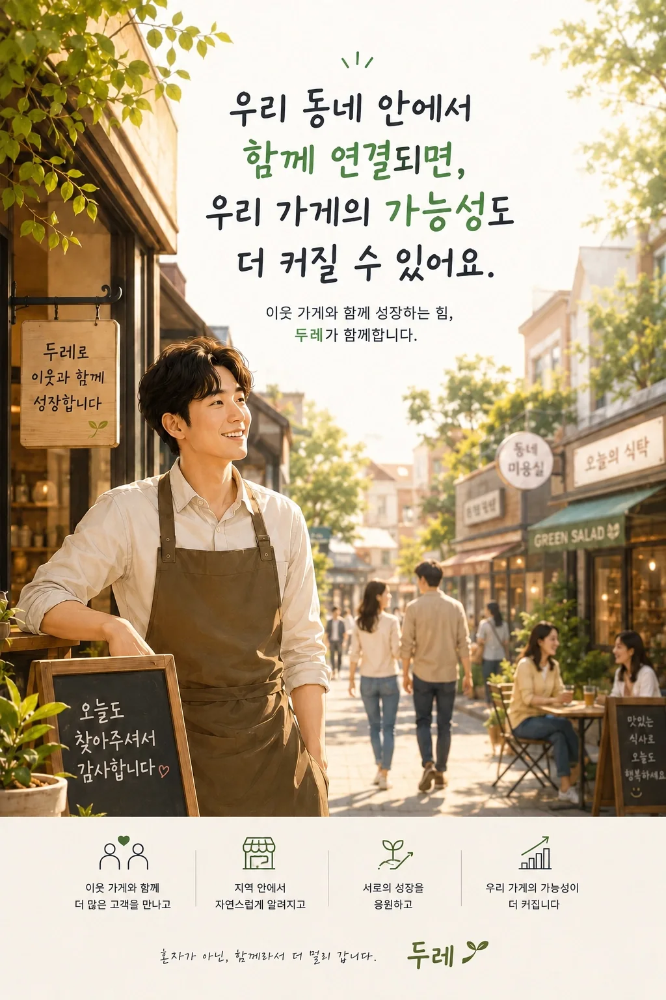

이미 동네에 있는 사람
가족가게를 방문한 고객이기 때문에 같은 생활권 안에서 이동할 가능성이 높습니다.
가까운 가족가게를 방문한 고객에게 우리 가게의 거리, 특징, 방문 이유를 보여줍니다.
가족가게를 방문한 고객이기 때문에 같은 생활권 안에서 이동할 가능성이 높습니다.
단순 배너가 아니라 거리, 대표 메뉴, 혜택과 방문 맥락을 담은 소개 콘텐츠를 제공합니다.
노출이 아니라 실제 QR 조회 흐름을 확인하고 다음 운영에 반영합니다.
구리 지역의 실제 방문 고객과 연결되는 첫 번째 가족가게 사례입니다.

가게 정보와 방문 이유가 잘 드러나도록 두레가 홍보 콘텐츠 제작을 지원합니다.